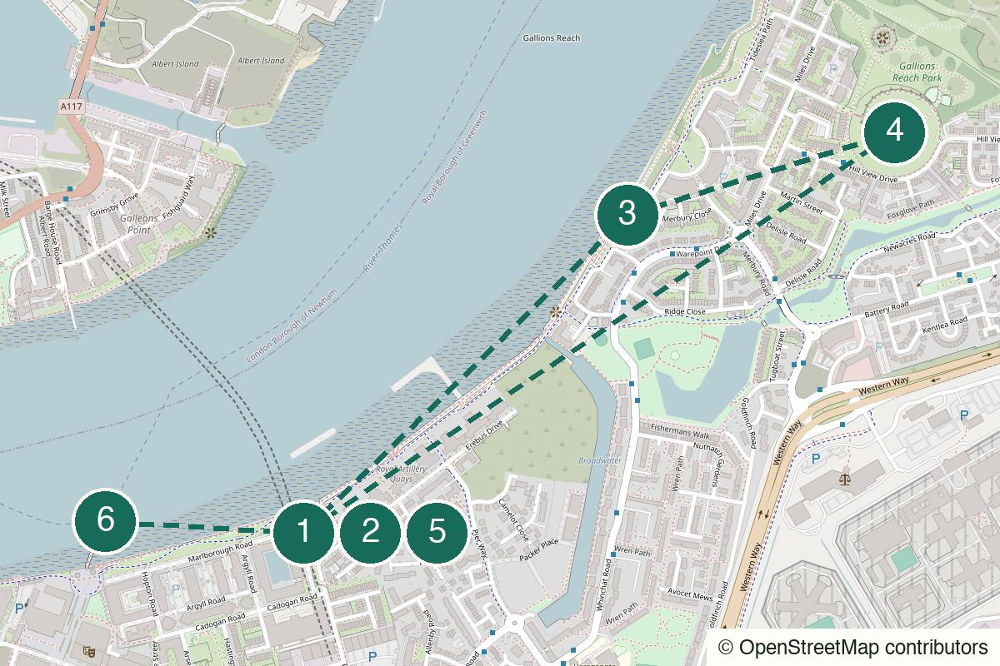

London Not yet field-walked
Rotherhithe
Warehouses, water and an old-room finish for a quieter stretch of the Thames.
Start Canada Water
Walked in person
Pubs, abandoned-feeling Thames paths, an artificial hill and a boat back into central London.
Walked in person by Slightly Elsewhere: Woolwich to Thamesmead Tor and back, with the Charlton add-on also completed. The rougher surface near Thamesmead, the exposed river and the gradual return to polished Woolwich are observations from the walk, not desk-researched promises.
Walked it? A field note keeps the route current.
Woolwich Elizabeth line – Leave towards Royal Arsenal and make the first pub your meeting point rather than standing around inside the station.
Royal Arsenal
Open the whole walk (opens in a new tab)
Use signed public paths and live directions around any closure. The Thamesmead end can be rough or muddy, and River Bus services can change or be affected by Thames Barrier closures.
We never ask for your location.
Woolwich begins unusually tidy: restored brick, broad squares and two plausible starting pubs. Walk east and that polish thins out. The path gets quieter, the surface rougher and the gaps between people longer, while the Thames stays beside you. The Tor is only a modest artificial hill, but the surrounding flatness makes the view feel much larger. Then turn round and watch the city put itself back together.
The Tor is not a mountain, the path is not a wilderness and the return is allowed to retrace the outward walk.
Good for a date only if both people actively want six or seven kilometres of exposed river and do not require constant novelty.
A small group works well. Make the pub choice before meeting so nobody accidentally interprets two nearby options as an instruction to visit both.
A strong solo route in daylight: clear river orientation, enough emptiness to reset and a return that feels like part of the plan.
Optional bad-weather stop
Worth checking if the weather turns bad, or if something interesting happens to be on. It is shelter near the beginning, not a promised attraction or a key waypoint, so check the current programme first.
Open this point (opens in a new tab)Check the current programme (opens in a new tab)

Royal Arsenal, Woolwich, London SE18
From the start From Woolwich Elizabeth line, walk into Royal Arsenal and choose one pub. This is a fork, not the opening of a pub crawl.
Eat or drink before the sparse river section. Both choices sit close to the station; check current hours, go by mood and do not force them into sequence.
Royal Arsenal, Woolwich, London SE18
From the previous stop Take a loose circuit through the restored brick buildings and open squares, then aim for the river rather than turning this into a history seminar.
The short wander matters mainly as contrast. It is developed, restored and rather composed; the eastbound path will gradually remove all three qualities.
Thames Path between Woolwich and Thamesmead
From the previous stop Join the signed public Thames Path and keep the river on your left as you walk east. Use live directions around any closure and do not cut through industrial land.
The polished riverfront falls away by degrees. Development becomes patchier, the path quieter and eventually rougher underfoot. Nothing dramatic announces it, but at some point the path stops feeling like London while remaining plainly part of the city.
Gallions Reach Park, Defence Close, Thamesmead, London SE28 0NT
From the previous stop Leave the Thames Path only by a current public route into Gallions Reach Park, then follow the spiral path up the mound.
The Tor is a man-made mound, not a major hill. That is the joke and the appeal: the ground around it is flat enough for a modest climb to produce a surprisingly broad view.
Walk from the previous stop (opens in a new tab)Official information (opens in a new tab)
Thames Path west to Royal Arsenal
From the previous stop Return by the same public riverside path, now keeping the Thames on your right. A live map is more useful than an invented loop.
Repetition is part of the route. The rougher gaps contract, people reappear and the restored Arsenal gradually comes back into view; London quietly rebuilds itself in reverse.
Marlborough Road, Woolwich, London SE18 6TL
From the previous stop Walk to the pier and check the next westbound service before tapping in or buying a ticket.
Take the boat west if the timetable works. It turns the journey home into the final scene, with a reasonable chance to choose a good viewing position before more passengers board closer to the centre – never a guaranteed seat.
Walk from the previous stop (opens in a new tab)Official information (opens in a new tab)
Main return: Westbound Uber Boat; Woolwich Elizabeth line is the fallback
Make the boat the last scene rather than an efficient afterthought. Try your luck for a river-facing seat before the service fills further west, but do not plan around getting one. Check the live timetable before setting off.
Open the pier (opens in a new tab)Check the current service (opens in a new tab)
Still got some walking in you?
This is another 4–5 km after the core route has returned to Woolwich. Skip the boat, turn south-west and treat Charlton as the exit rather than pretending it fits inside the Tor walk. It deserves a route of its own later.
Open the Charlton extension (opens in a new tab)
Repository Road, Woolwich, London SE18 4BH
From the start From the pier, use the live south-west walking route towards Woolwich Common and stay on public streets around the barracks.
A quick visual waypoint: an unusually long, imposing Georgian frontage across the parade ground. Look, register the scale and keep moving; this is not the moment for a military-history lecture.
Walk here from Woolwich (opens in a new tab)Official information (opens in a new tab)
Ha-Ha Road, Woolwich Common, London SE18
From the previous stop Continue along the public edge of Woolwich Common towards Ha-Ha Road, using live directions for crossings.
The name is ridiculous but not random. A ha-ha is a sunken landscape boundary – usually a ditch and retaining wall – designed to keep animals out without interrupting the view. Woolwich Common has one, so the road gets the punchline.
6 The Village, Charlton, London SE7 8UD
From the previous stop Continue west towards Charlton Village and use The Bugle Horn as the final pub pin, not the start of a wider Charlton itinerary.
A straightforward last drink near the village centre. Charlton deserves its own Slightly Elsewhere day; on this walk it is simply a useful ending after you ignored the boat.
Walk from the previous stop (opens in a new tab)Official information (opens in a new tab)
Charlton Church Lane, London SE7 7QG
From the previous stop Walk downhill from the village to Charlton station and take the train back towards central London.
The transport-first ending. If the pub is not what you want, go straight to the station; the extension does not need a ceremonial final stop.
Walk from the previous stop (opens in a new tab)Official information (opens in a new tab)
Dry daylight; grey weather suits it
Eat or drink in Woolwich before setting off and carry water. After Royal Arsenal, indoor stops and dependable toilets become scarce until you return.
Choose one starting pub, walk east to the Tor, retrace the Thames Path and finish on the westbound boat.
After returning to Woolwich, skip the boat and add the barracks, Ha-Ha Road, Charlton Village and the train home.
Check Woolwich Works and stay around Royal Arsenal. Do not force the full river section in heavy rain or strong wind; mud and exposure are not improved by commitment.
After the Tor and the return to Woolwich, ignore the boat and take the clearly separate 4–5 km Charlton extension.
Turn back on the same Thames Path whenever the weather, surface or energy stops cooperating. Woolwich remains the dependable exit.
This day sounds like: Talking Heads – Road to Nowhere
Help keep it useful
Closed gates, changed hours and the point where you bailed are more useful than polite applause.